Arte Visual

Respuesta enviada
Valoramos mucho tu devolución y la vamos a tener en cuenta para seguir ajustando nuestro trabajo.En Arte Visual creemos en los procesos que evolucionan junto a cada cliente.